Восстановление песчаного пляжа
Намыть песка на пляж иногда не так просто как кажется.
Что нужно делать
При намыве песка на берег со свободным растеканием трудно выдержать ровную (планируемую) береговую линию. Особенно это сложно сделать при большом уклоне берега. Решить задачу намыва пляжа мини земснарядом поможет — обвалование.
Первичное обвалование можно выполнить из привозного грунта, специальных щитов или спец техники.
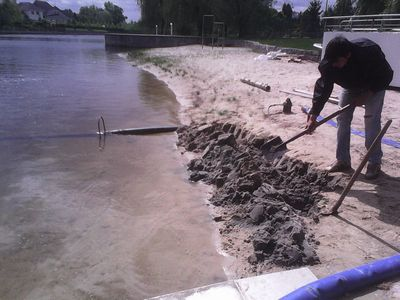Первичные земляные работы
Размер первичного обвалования должен обеспечить непрерывную работу мини земснаряда хотя бы на пару пусков и быть достаточным объемом чтобы песок имел возможность отстоятся.
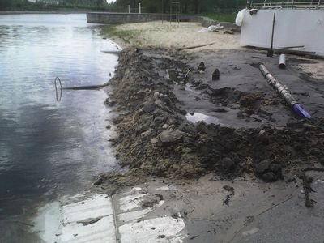Намыв песка с помощью сепаратора и обвалования
Высоту овбаловки можно повышать по мере намыва песка. Для уменьшения размыва обвалования потоком пульпы, можно в критические места устанавливать доску или специальные щиты.
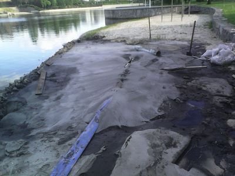Растекание песка через сепаратор
Иногда полезно применять при намыве сепараторы (или рассекатели) потока для равномерного распределения песка по поверхности без образования канав.
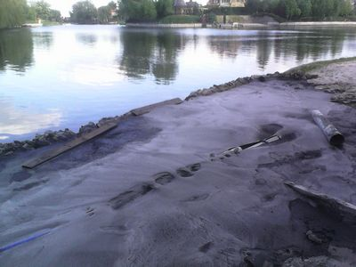Укладываем песок на пляж
Как будет уложено достаточно песка тогда можно увеличивать и размеры вала. Благо крупный речной песок быстро отдает воду и его легко брать лопатой.
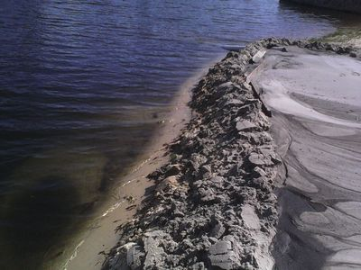Ширина обвалования
При сооружении отстойника важно сразу тщательно уложить сливную трубу. Если вода найдет промоину под трубой, её уже бесполезно закидывать песком. Сразу разбирайте и раскапывайте и укладывайте заново, но более тщательно. Все попытки залатать течь на ходу обычно не приносит результата.
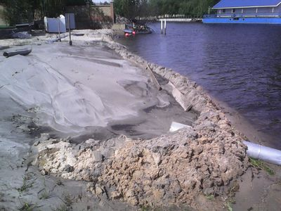Колодец для спуска воды
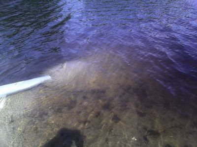Сток
После того как намыли достаточное количество, холмики раскидываются лопатой и можно заволочить граблями.
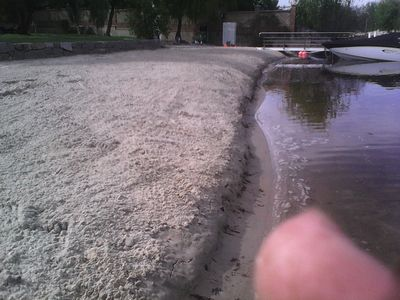Работы по выравниванию пляжа
На этом объекте песок намывали мини земснарядом с грязевой мотопомпой «Пиранья» и размывочной.
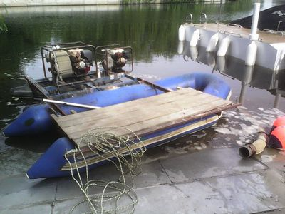Мини земснаряд
Вот, в принципе, и все…
Пляж в таком виде простоит около месяца.
Постепенно бровка сползет и размоется волной от проходящих мимо катеров. Пляж примет более естественный, природный облик.
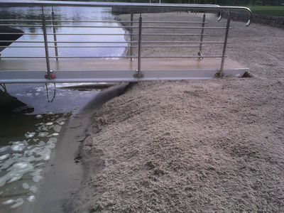Вид со стороны причала
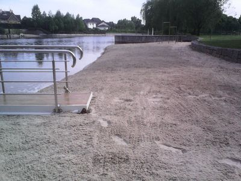Завершение работы
КОГДА ПЛЯЖ УХОЖЕНЫЙ - НА НЕМ ПРИЯТНО НАХОДИТСЯ!
Звоните по телефону, Киев — (098) 482 02 60
ВЕРНИТЕ КРАСОТУ И ЧИСТОТУ НА БЕРЕГУ СВОЕГО ВОДОЕМА. ЗАКАЖИТЕ ВОСТАНОВЛЕНИЕ ПЛЯЖА У НАС И ВЫ ПРИЯТНО УДИВИТЕСЬ!